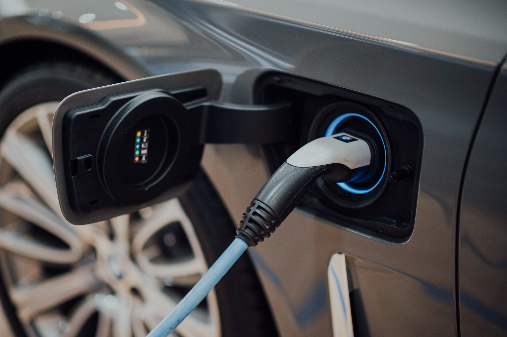

News

"Electric vs. Gas Cars: Is It Cheaper to Drive an EV?"
Looking to save money on your car? You may be wondering whether it's cheaper to drive an electric vehicle (EV) or a gas-powered car. In this article, the author delves into the complex world of car ownership costs, exploring factors like sticker prices, fuel and electricity costs, maintenance expenses, and lifetime costs.
But before you start your research, consider these two important ideas for finding reliable sources. First, take a closer look at the author's credentials and affiliations. This helps ensure they have the necessary knowledge and experience to write about the topic you're researching. And second, investigate the publisher or sponsor of the source to ensure it's reputable and fact-checked.
By keeping these ideas in mind, you can feel confident in the sources you choose and make informed decisions about your car ownership. So click that button and dive into the world of EVs and gas-powered cars.
Our Article
Original Article

“Will an Electric Car Save You Money?"
Looking for a cost-effective and eco-friendly alternative to gas-powered vehicles? If you're considering purchasing an electric vehicle (EV), you may want to check out this informative article by Keith Barry, a writer/editor at Consumer Reports' Auto Test Center in Colchester, Conn. In it, Barry compares the costs of driving EVs and their gas or hybrid counterparts, discussing industry trends, tax incentives, and cost savings.
But the article goes beyond just comparing costs. It also provides tips for choosing reliable sources for your research, with a focus on the author's credentials and affiliations, as well as the publisher or sponsor of the source. Plus, it sheds light on government policies and programs that can make owning an EV more cost-effective, and even touches on the need for public charging infrastructure.
This article presents a balanced view of the topic, outlining both pros and cons of various arguments and presenting data in a factual way, So, whether you're a potential EV buyer or simply curious, this article is a must-read.
Our Article
Original Article

"Made-in-America Electric Cars: Good in Theory but a Mess
in Practice"
Electric cars are the future, but what happens when government policies meant to incentivize their production and use end up causing more harm than good? That's the argument made by Kate Aronoff, a staff writer for the New Republic, in her latest article, "The Inflation Reduction Act Could Be Bad News for Electric Cars."
In this thought-provoking piece, Aronoff discusses how the Inflation Reduction Act's tax credit provisions could actually hinder the domestic production of electric cars, which could come as a surprise to many readers who are already sold on the idea that electric cars are the way to go. Her argument is backed up by a wealth of evidence and statistics, making it an informative read for anyone interested in energy policy and climate change.
This source is incredibly useful for anyone researching government policies and programs aimed at promoting electric cars, such as tax credits, subsidies, and regulations. While the article mainly focuses on discussing the Inflation Reduction Act, which focuses on building out domestic supply chains for clean energy that will benefit the climate, it also touches on other important issues related to the production and use of electric cars. Don't hesitate, click that button and let's uncover the truth about EVs.
Our Article
Original Article

"Electric cars — Challenges and trends"
Are you curious about the latest developments in the electric car industry? Do you want to know about the challenges and trends shaping the future of this exciting field? Look no further than this insightful source, which delves deep into the technical and economic aspects of electric car development.
From the latest advances in battery technology to the growing network of charging infrastructure, this source covers it all. You'll gain a comprehensive understanding of the current state of the industry and its potential for growth and innovation in the coming years.
But that's not all - this source also looks at the impact of autonomous driving and the broader economic trends that are driving the growth of the electric car market.
So what are you waiting for? If you want to stay ahead of the curve and explore the cutting edge of electric car technology, click that button and dive into the world of EVs and the future of transportation!
Our Article
Original Article

"Environmental
Implications of Electric Cars"
If you're concerned about the environment and looking to switch to an electric car, this source is a must-read. The article explores the potential environmental impact of electric cars and highlights the need to consider the source of energy used to power them. Lester B. sheds light on the harmful environmental effects of producing and recycling large quantities of batteries, providing specific information about the environmental impact of the energy source used to power electric cars.
Not only will this source help you better understand the potential environmental impact of electric cars, but it also provides insights into the importance of considering the source of energy used to power them. With a focus on the production and reprocessing of batteries needed to power electric cars, this source is perfect for those interested in the technical and environmental aspects of the industry.
Written by three professors from Carnegie Mellon University, this academic research provides a comprehensive analysis of the environmental implications of electric cars. They use data and research to support their claims and present their findings in a straightforward manner. So, if you're ready to dive deeper into the world of electric cars and learn about their potential impact on the environment, click that button and start reading.
Our Article
Original Article

"Electric Cars: The Pros, Cons, and the Path Forward"
Are electric cars really the solution to our transportation problems? In this thought-provoking source, the author challenges the commonly held belief that electric vehicles are the key to a greener future. While expressing his support for electric cars, he recognizes that there are still many challenges that need to be addressed, such as the negative environmental and health impacts associated with their production and use.
This source goes beyond the typical arguments for or against electric cars and delves into the complexities of our transportation system. It raises important questions about the larger societal issues that contribute to our reliance on cars, such as traffic congestion and a lack of parking space. The author also highlights the need to reduce the number of cars on the road and promote better transportation alternatives, including creating more livable cities.
So if you're curious about the future of transportation and the role of electric cars in it, click that button and explore the thought-provoking insights of this source.
Our Article
Original Article

"Yes to electric cars—but not the Hummer EV"
The Hummer EV is an environmental disaster, and it should be treated as one
The Hummer is back, and this time it's electric. But is it really a step forward for the environment and public health, or a disaster in disguise? The new Hummer EV is bigger and heavier than its gas-guzzling predecessor, and its enormous battery contains large amounts of critical ingredients like lithium that are in short supply. Not to mention, its added weight will apply extra force in a collision, putting pedestrians, cyclists, and those in normal-size cars at risk. Plus, the Hummer EV's battery consumes so much power that it generates more carbon per mile than a gas-powered Chevy Malibu.
But is this really the right move for the environment and society as a whole? With smaller EVs being better for the planet and public health, an enlightened government would utilize regulations and tax policy to manage vehicle size and nudge the industry toward smaller models.
So, is the Hummer EV a monstrosity that need not exist? Click that button and read on to find out more.
Our Article
Original Article

"Shifting to EVs is not enough. The deeper problem is our car dependence"
As the world grapples with the ongoing climate crisis, governments are under increasing pressure to take action to reduce emissions and tackle the root causes of global warming. In Canada, the government has made a strong push towards the adoption of electric vehicles as part of its strategy to reduce greenhouse gas emissions. While electric vehicles produce fewer emissions than their gas-powered counterparts, the focus on them as the solution to climate change is misguided and overlooks the deeper problem of car dependence.
The dominance of cars in our communities is a major contributor to greenhouse gas emissions and other environmental and health problems. Car-centric policies and infrastructure have incentivized suburban living and prioritized cars above other forms of mobility. Click the button to read more about the challenges and opportunities in the fight against climate change.
Our Article
Original Article